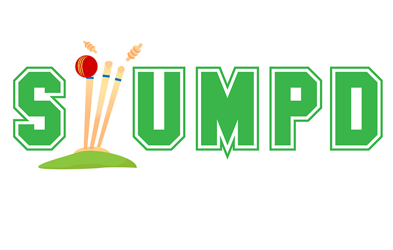
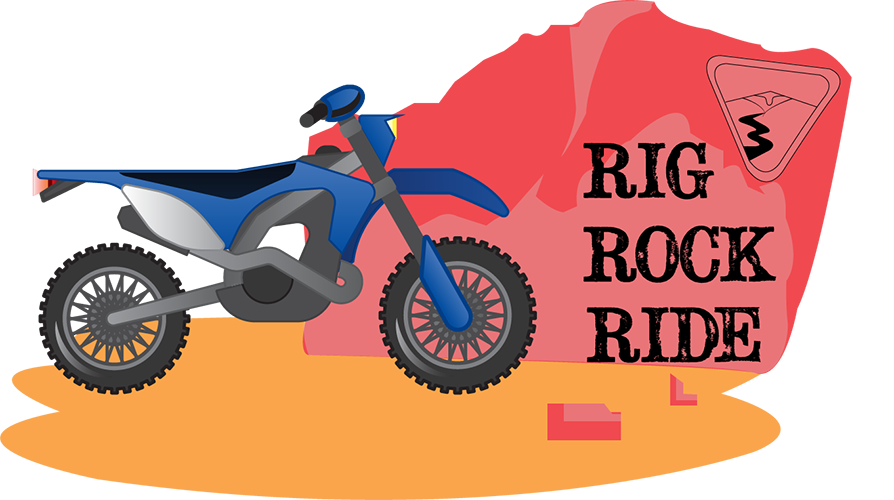
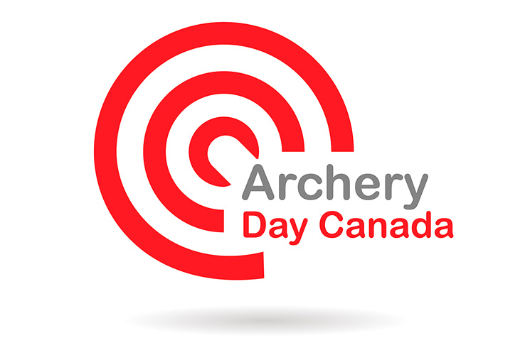
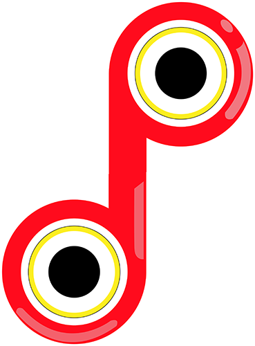

This is a redesign of a Logo for a company "Stumpd" which streams various international tournaments live on the website and their app. The logo is highly intutive and self suggesting, laying emphasis on cricket, also the stumps used in the logo can be used as the icon for the app as well

This is a simple, delfdesigned logo designed for a company selling & Renting Mountain bikes in the city of Nevada.

This is a redesign of an Event that takes place in Canada "The Archery Day". This event is organised for students, to educate them about the importance of Sports in life. The logo clearly depicts the type of event, the red color is used to lay emphasis on the the Nationality of event ie Canada. the logo encourages students to focus on their goals in life

This is a logo of a Digital Marketing Company "Digilion". The company provides digital marketing services in Jaipur. The logo brings out the strong and powerful nature of Digilion, the jumping lion symbolises the leap towards a better future for your business

Here is a Logo for "Piyush Palod". The logo expresses an symmetry aligning with the nature of Piyush. The vibrant colors are used to depic his colorful and energetic behavior